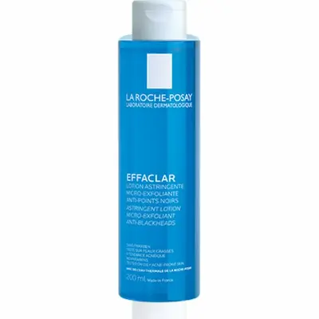

La Roche-Posay Effaclar Astringent Lotion: контроль пор и жирности
Разбираем, как работает этот очищающий тоник: сочетание спирта и салициловой кислоты помогает уменьшить жирный блеск, очищает поры и выравнивает текстуру кожи. Подходит ли он для ежедневного ухода в условиях климата Молдовы — и кому стоит быть осторожнее.

La Roche-Posay Effaclar Astringent Lotion
Очищающий и сужающий поры лосьон, разработанный для жирной и проблемной кожи. Формула сочетает Alcohol Denat. и салициловую кислоту, благодаря чему эффективно удаляет излишки себума, очищает поры и визуально улучшает текстуру кожи. Средство быстро испаряется, создавая ощущение чистоты и матовости, что особенно актуально в жаркий сезон. При этом при частом использовании может вызывать сухость, поэтому важно сочетать его с увлажняющими и восстанавливающими средствами. Подходит для точечного или умеренного применения в уходе за кожей, склонной к жирности и высыпаниям.
Текстура и первое использование
В отличие от плотных уходовых средств, La Roche-Posay Effaclar Astringent Lotion имеет легкую, водянистую текстуру, которая быстро распределяется по коже и мгновенно впитывается. После нанесения ощущается характерный эффект свежести и очищения, без липкости и тяжести.
Благодаря содержанию спирта, средство быстро испаряется, создавая матовый финиш и визуально уменьшая жирный блеск. Уже после первых применений кожа выглядит более гладкой, а поры — менее заметными. Однако важно учитывать, что ощущение «чистоты до скрипа» может сопровождаться легкой сухостью.
Разбор состава: Что внутри?
Основу формулы составляют Alcohol Denat. и салициловая кислота — сочетание, направленное на очищение пор и контроль выработки себума. Спирт обеспечивает быстрый обезжиривающий эффект и усиливает проникновение активных компонентов.
Салициловая кислота (BHA) проникает в поры, растворяет излишки себума и помогает уменьшить черные точки и воспаления. В составе также присутствуют успокаивающие компоненты, характерные для бренда La Roche-Posay, которые частично компенсируют агрессивность спиртовой базы. Тем не менее, баланс формулы требует аккуратного и умеренного применения.
Кому он НЕ подойдет?
Несмотря на эффективность, Effaclar Astringent Lotion может быть слишком агрессивным для сухой, чувствительной или поврежденной кожи. Высокое содержание спирта способно усиливать ощущение стянутости, вызывать раздражение и нарушать кожный барьер.
Также средство не рекомендуется для ежедневного многократного использования, особенно в холодный сезон или при обезвоженной коже. В таких условиях лучше ограничить применение до 1 раза в день или использовать его точечно, обязательно сочетая с увлажняющими и восстанавливающими средствами.
Очищение vs Баланс: как использовать правильно?
Важно понимать, что La Roche-Posay Effaclar Astringent Lotion — это не базовый увлажняющий продукт, а средство для глубокого очищения и контроля себума. Он помогает быстро уменьшить жирный блеск и очистить поры, но требует грамотного сочетания с другими этапами ухода.
Это средство лучше рассматривать как дополнительный этап ухода, а не ежедневную основу. После использования обязательно наносите увлажняющий крем или сыворотку, чтобы предотвратить пересушивание кожи. При правильном применении кожа выглядит более чистой, матовой и ровной, особенно в жарком климате Молдовы.
Лайфхак: как избежать сухости и раздражения
Чтобы снизить риск раздражения, используйте средство 1 раз в день, предпочтительно вечером. Наносите его с помощью ватного диска, избегая области вокруг глаз и чувствительных зон.
Важно соблюдать правило: очищение → увлажнение → восстановление. После лосьона используйте крем с увлажняющими компонентами (глицерин, пантенол, гиалуроновая кислота), чтобы поддержать защитный барьер кожи. Если кожа чувствительная — наносите средство только на Т-зону или проблемные участки.
Когда стоит быть осторожнее?
Несмотря на эффективность, Effaclar Astringent Lotion может вызывать дискомфорт у людей с чувствительной или обезвоженной кожей. В таких случаях лучше сократить частоту применения или полностью отказаться от использования.
Также не рекомендуется сочетать его одновременно с другими агрессивными активами (ретиноиды, кислоты в высокой концентрации), чтобы не перегрузить кожу. В холодное время года или при нарушенном кожном барьере стоит сделать упор на восстановление и уменьшить использование спиртосодержащих средств.
Часто задаваемые вопросы
Не пересушивает ли этот лосьон кожу?
Может пересушивать при частом использовании, так как содержит спирт (Alcohol Denat.). Однако при умеренном применении и обязательном использовании увлажняющего крема средство помогает контролировать жирность без выраженного дискомфорта.
Подходит ли он для жирной кожи с акне?
Да, Effaclar Astringent Lotion разработан именно для жирной и проблемной кожи. Благодаря салициловой кислоте он очищает поры, уменьшает черные точки и помогает снизить количество высыпаний.
Можно ли использовать его каждый день?
Рекомендуется использовать 1 раз в день, лучше вечером. При чувствительной коже — через день или только на проблемные зоны, чтобы избежать раздражения и нарушения кожного барьера.
Можно ли наносить на всё лицо?
Да, но с осторожностью. Если кожа комбинированная, лучше наносить только на Т-зону. Избегайте области вокруг глаз и участков с повышенной чувствительностью.
Помогает ли он от черных точек и пор?
Да, за счёт BHA-кислоты средство проникает в поры, растворяет себум и способствует их очищению. При регулярном использовании поры становятся менее заметными, а кожа — более гладкой.
Можно ли сочетать с кислотами или ретинолом?
С осторожностью. Не рекомендуется использовать одновременно с другими агрессивными активами, чтобы избежать раздражения. Лучше чередовать применение и обязательно добавлять восстанавливающий уход.